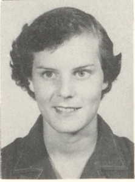
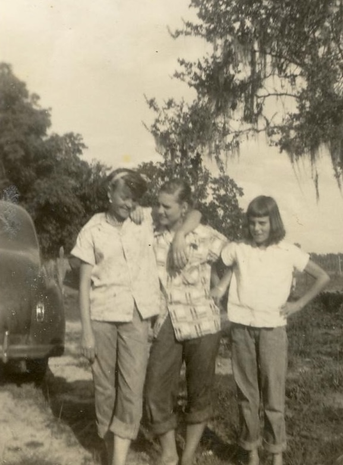
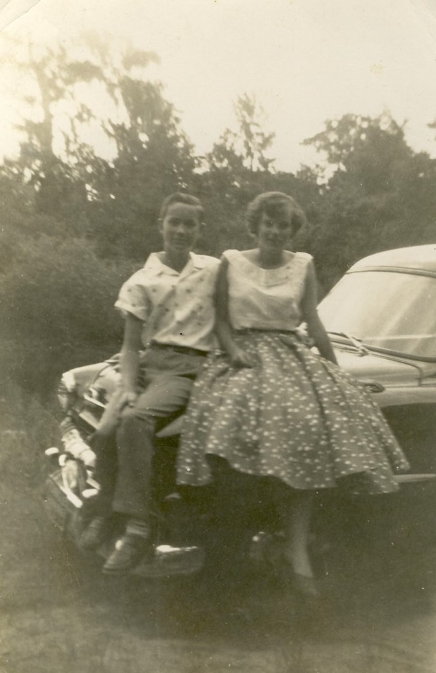
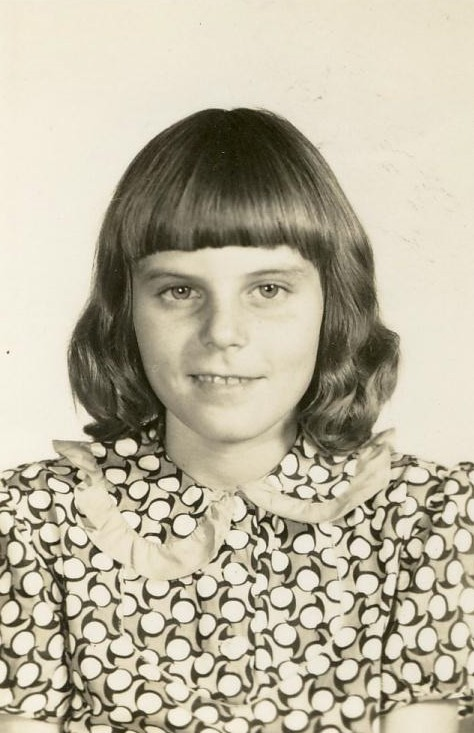
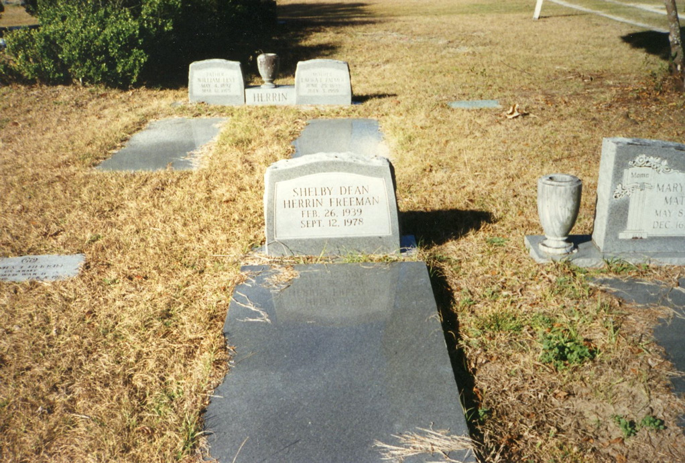

Shelby Jean Herrin
1939–1978

Life Events
Born: February 26, 1939 — Pearson, Atkinson, Georgia, United States
Died: September 12, 1978 — Stockbridge, Henry, Georgia, United States
Family
Father: William Levi Herrin Sr.
Mother: Laura Etta Palmer
Siblings
Military Service
No military service information has been added.
Biography
Shelby Jean Herrin was born February 26, 1939, in Clinch County, Georgia. She was a daughter of William Levi Herrin and Laura Etta Palmer.
Shelby married Arthur M. Freeman and lived in Stockbridge, Henry County, Georgia. Her occupation was recorded as key punch operator.
Shelby died September 12, 1978, at Clayton General Hospital in Riverdale, Clayton County, Georgia, at age 39.
Her obituary identifies her husband, Arthur M. Freeman, and daughter, Elizabeth Renea Griffin. It also names her surviving siblings: Ollie Singletary, Evelyn Webb, Ida Mae Seacrest, Dorothy Hines, Deloris Morgan, James Herrin, and Billy Herrin.
Shelby was buried at Woodlawn Cemetery in Perry, Taylor County, Florida.
Photos




Grave & Burial

Woodlawn Cemetery, Perry, Taylor County, Florida
Sources
-
1940 United States Census — William Levi Herrin Household
Type: Census1940 United States Census recording William and Laura Etta Herrin and their family in Lafayette County, Florida. The family surname was recorded as Harring. The census reports their earlier residence in Georgia near the Pearson and Atkinson County area.
Location: Lafayette, Florida, United States
Household: William L. Harring Household
Household Members:
- William L. Harring, head, age 47
- Laura E. Harring, wife, age 40
- Ollie Mae Harring, daughter, age 22
- James Harring, son, age 20
- Ida Mae Harring, daughter, age 18
- Gladys Harring, daughter, age 15
- Mary Lou Harring, daughter, age 13
- Dorothy Harring, daughter, age 10
- Billie Harring, son, age 8
- Evelyn Harring, daughter, age 5
- Shelby Dean Harring, daughter, age 1
Supports: William Levi Herrin and Laura Etta Palmer residing in Lafayette County, Florida in 1940, The Herrin family's move from Georgia to Florida, Nine children residing with William and Laura Etta, Ollie recorded as Ollie Mae by 1940, William Levi Herrin Jr. recorded as Billie, Shelby Jean Herrin recorded as Shelby Dean
-
1950 United States Census — William Levi Herrin Household
Type: Census1950 United States Census recording William and Laura Etta Herrin and five of their children in Lafayette County, Florida. William was still working as a farmer.
Location: Lafayette, Florida, United States
Household: William L. Herrin Household
Household Members:
- William L. Herrin, head, age 58
- Laura E. Herrin, wife, age 55
- Dorothy Herrin, daughter, age 20
- Billy Herrin, son, age 17
- Evelyn Herrin, daughter, age 16
- Shelby J. Herrin, daughter, age 11
- Deloris Herrin, daughter, age 7
Supports: William Levi Herrin and Laura Etta Palmer residing in Lafayette County, Florida in 1950, William Levi Herrin working as a farmer, Dorothy, Billy, Evelyn, Shelby Jean, and Deloris residing with their parents, Deloris Herrin recorded as born in Florida
-
Obituary — Shelby Jean Freeman, 1978
Type: ObituaryNewspaper obituary for Shelby Jean Freeman, age 39, reporting her death at Clayton County General Hospital in Georgia. The obituary identifies her husband, Arthur M. Freeman; daughter, Elizabeth Renea Griffin; five sisters, Ollie Singletary, Evelyn Webb, Ida Mae Seacrest, Dorothy Hines, and Deloris Morgan; and two brothers, James Herrin and Billy Herrin. Graveside services were scheduled at Woodlawn Cemetery in Perry, Florida. The newspaper title and publication date have not yet been established.
Location: Perry, Florida
Supports: Shelby Jean Freeman died at age 39, Shelby's husband was Arthur M. Freeman, Shelby had a daughter named Elizabeth Renea Griffin, The obituary identifies five sisters and two brothers, Graveside services were held at Woodlawn Cemetery in Perry, Florida
-
Georgia Death Certificate — Shelby Jean Freeman, 1978
Type: Death CertificateGeorgia death certificate, state file number 029224, identifying Shelby Jean Freeman as born February 26, 1939, in Clinch County, Georgia, and deceased September 12, 1978, at Clayton General Hospital in Riverdale, Georgia. Her parents are identified as W. L. Herrin and Laura Palmer, and her husband as Arthur M. Freeman. Burial was recorded at Woodlawn Cemetery in Perry, Florida.
Location: Clayton County, Georgia
Supports: Shelby Jean Herrin was born February 26, 1939, Shelby was born in Clinch County, Georgia, Shelby died September 12, 1978, Shelby's parents were W. L. Herrin and Laura Palmer, Shelby's husband was Arthur M. Freeman, Shelby was buried at Woodlawn Cemetery in Perry, Florida